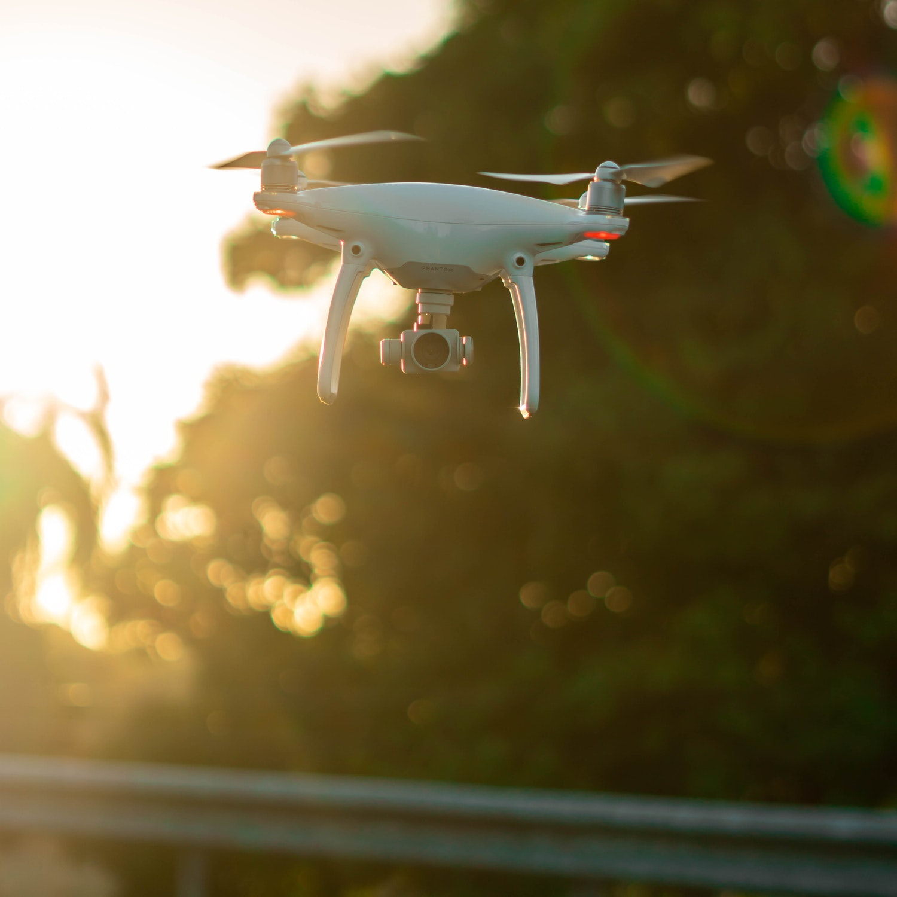
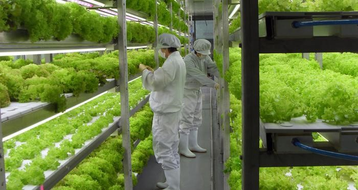
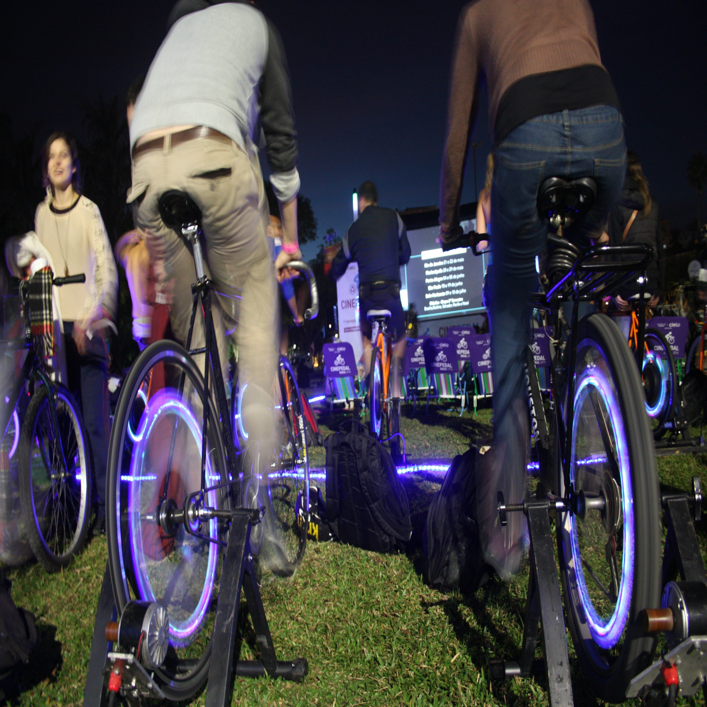

Fome zero e agricultura sustentável

Nosso objetivo
Somos uma empresa que preza pelo avanço e pela tecnologia em favor das pessoas, com isso em mente, queremos tornar real um mundo aonde todos possam ter comida com qualidade e fartura. Assim criamos produtos que auxiliam os produtores rurais e ajudaremos na implementação de fazendas verticais.

Moist Angel
É um drone que passa por cima das plantações e possui uma câmera com um detector que registrando a temperatura da planta a partir do ar, se a temperatura estiver alta, o drone manda a informação para um sistema de irrigação que irriga a área com temperatura elevada. O público alvo dessa tecnologia são os pequenos e médios fazendeiros com o objetivo de dobrar a produtividade agrícola e a renda dos pequenos produtores de alimentos.

Sustentabilidade

Agilidade

Eficiência
AgroFit

O projeto consiste na instalação de uma estrutura de agricultura vertical em alguma via de alto movimento (Ex. Av.Paulista). Demonstrando a viabilidade deste tipo de projeto tanto na produção agrícola em si como na capacidade de transformação da consciência social, aproximando a população paulista de um estilo de vida saudável e sustentável. Esse projeto pode ser replicado em diversas localidades das grandes metrópoles, graças ao sistema de redução do custo energético da estrutura de agricultura.

O sistema consiste em cada andar do prédio será designado para um esporte: musculação, crossfit, artes maciais, ioga, pilates, natação e terá 2 andares de aparelhos aeróbicos como: esteiras, bicicletas ergometrica, escada ergometrica, etc. As pessoas que fizerem esses exercicios aerobicos acumularão pontos de acordo com o tempo em que fizerem, e poderão trocar esses pontos em desconto da academia, refeições em um andar de cantina, produtos de lojas que terão em outro andar também. As pessoas que fizerem esses exercicios especificos além de ganharem pontos de troca, estarão ajudando na produção de energia para as plantações que vão estar nos últimos andares do prédio, contribuindo para a agricultura vertical.
Energia Sustentável
Atrativo para Patrocinadores
Vida Saúdavel
Acima de tudo, este espaço será dedica a todos aqueles que estiverem dispostos a dar esse passo em direção ao progresso procurando ativamente unir pessoas influentes nos meios de comunicação, produtores agrícolas e os desenvolvedores dessas novas tecnologias em busca de uma nova evolução Agrotech. O seu público alvo são os cidadãos que procuram uma vida fit e que estão dispostos a ajudar a plantação vertical tornando a grandes cidades um lugar mais sustentável e tem como o objetivo garantir sistemas sustentáveis de produção de alimentos e implementar práticas agrícolas resilientes, que aumentem a produtividade e a produção, que ajudem a manter os ecossistemas além de dobrar a produtividade agrícola nas grandes cidades.
Quem Somos?

Eduardo Oliveira
Sócio Investidor

Felipe Eiji
Design Geral

Kauan Nascimento
CEO

Vitor Francisco
Programador

William Melo
Jurídico